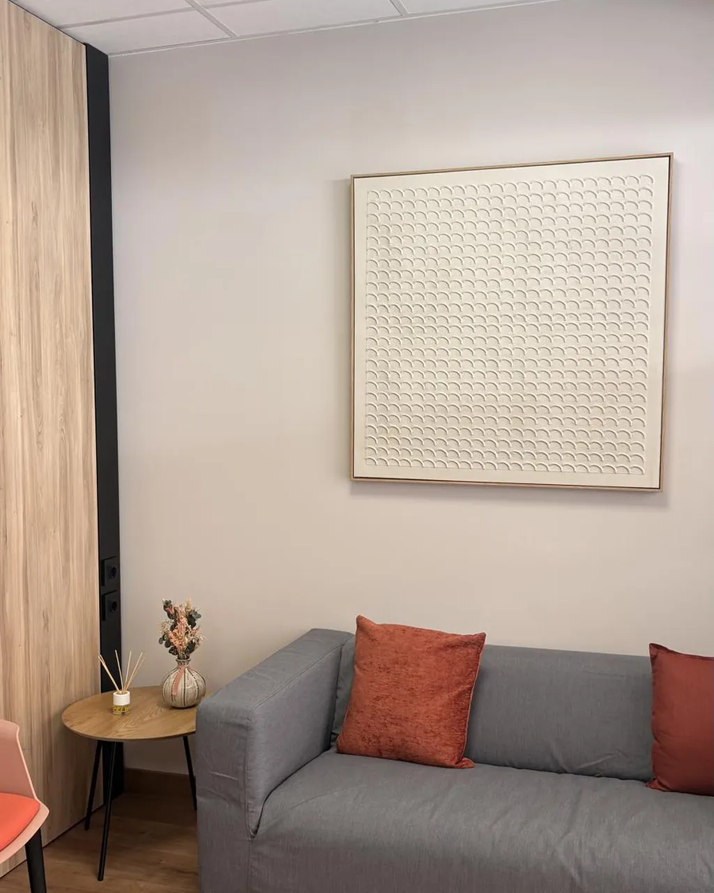

Psicologia clínica
Psicoteràpia per a adults i adolescents, i infància quan correspon.
Veure servei →La banda clínica i sanitària del grup. Un espai sobri i reservat per a l'avaluació i el tractament de trastorns de salut mental, amb psicologia i psiquiatria treballant coordinades.
Com ho entenem
Al Clínic atenem persones adultes, adolescents i, quan correspon, infància, en processos de psicoteràpia i de seguiment psiquiàtric.
Quan un cas necessita psicologia i psiquiatria alhora, les dues disciplines comparteixen informació i criteri. El seguiment farmacològic, si escau, s'acorda i es revisa.
Si la porta d'entrada hauria de ser una avaluació més àmplia, coordinem amb la UAD; si el treball és sobretot de desenvolupament i aprenentatge, amb Pragma Institut.

Serveis
Atenció individual i grupal, amb un equip que es coordina cas a cas.
Psicoteràpia per a adults i adolescents, i infància quan correspon.
Veure servei →Avaluació diagnòstica, seguiment i tractament farmacològic quan és necessari.
Veure servei →Espais grupals conduïts per professionals per compartir i avançar.
Veure servei →La família com a context de cura i com a part del procés.
Consultar →Les dues disciplines sobre un mateix cas, amb criteri compartit.
Consultar →Logopèdia clínica i altres intervencions quan el cas ho requereix.
Consultar →A qui ens adrecem
Ansietat, estat d'ànim, moments de crisi, processos de dol i acompanyament sostingut.
Salut mental en una etapa sensible, amb la família implicada en el procés.
Quan el cas necessita mirada clínica, sovint en coordinació amb l'Institut.
Un primer pas
Demana una primera visita. Si encara no saps quin professional necessites, també t'orientem.
Demanar hora